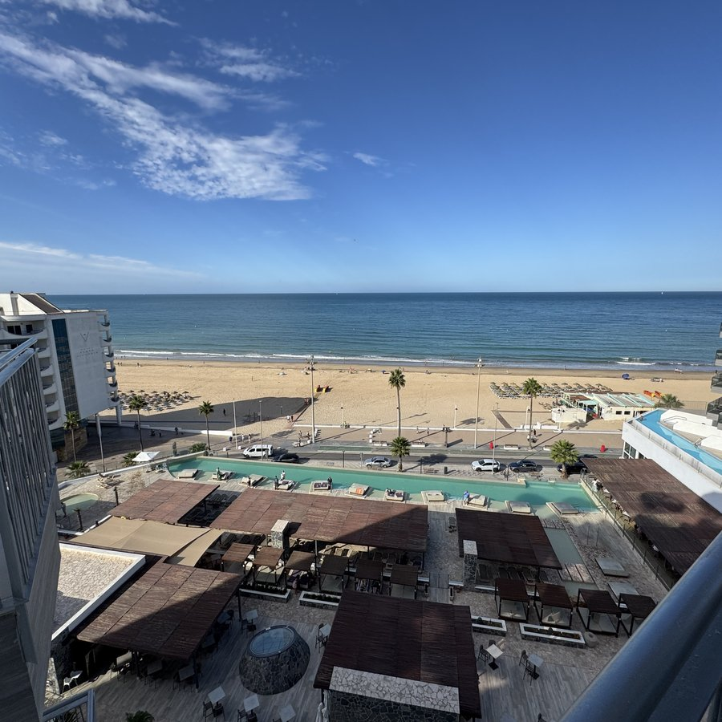
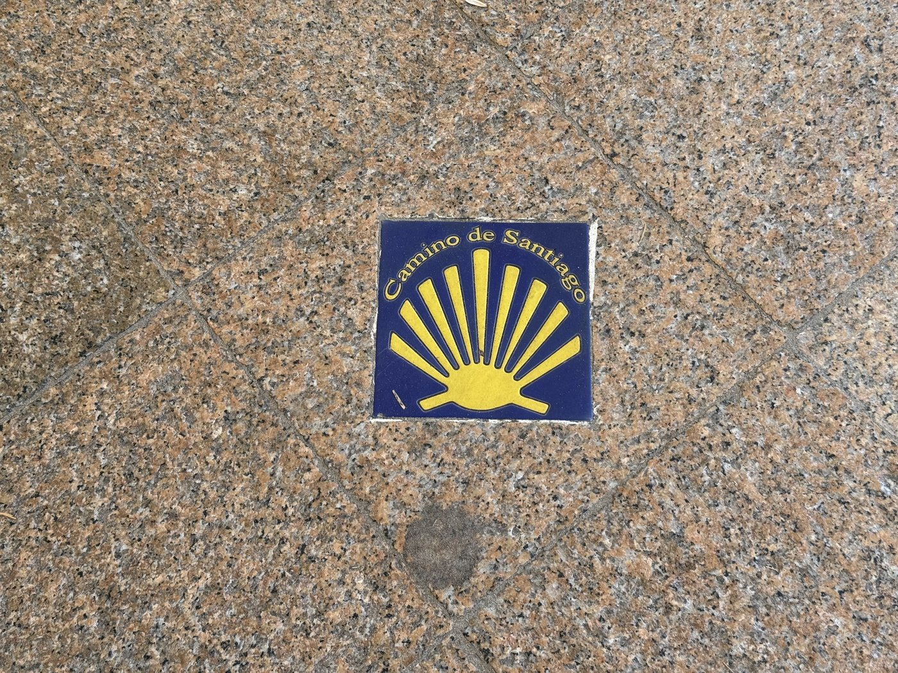
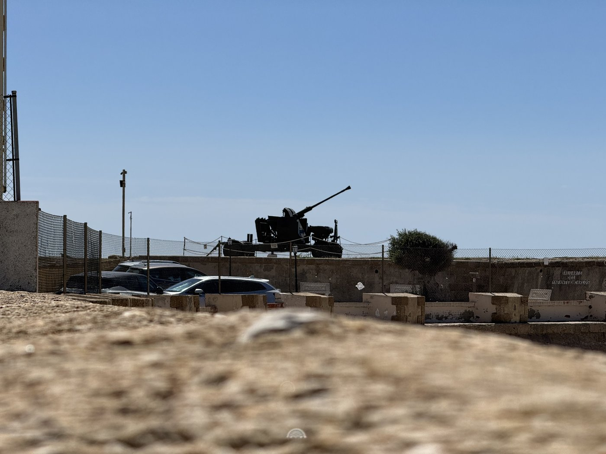
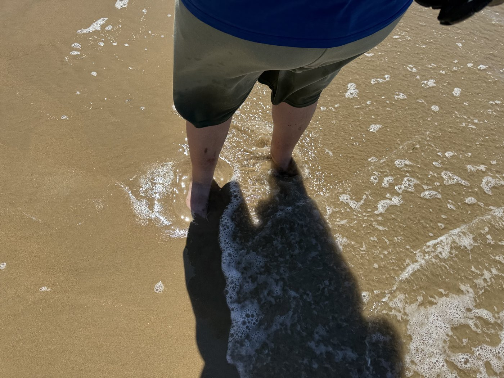
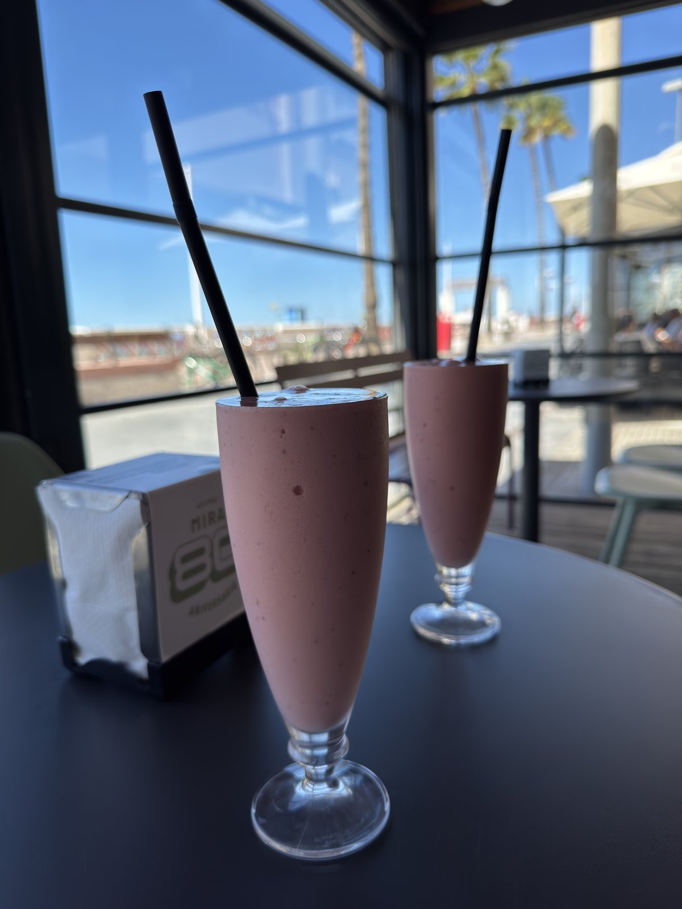
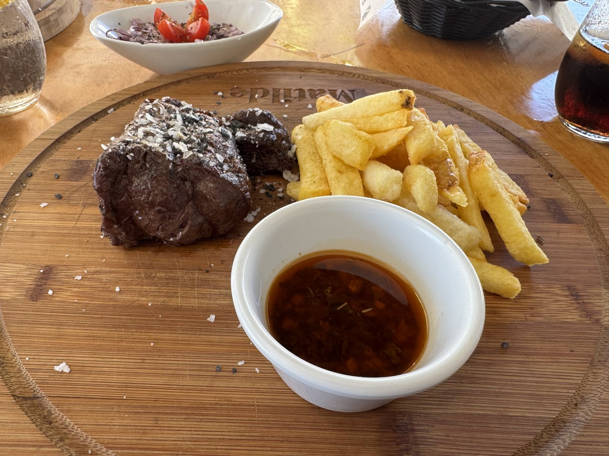
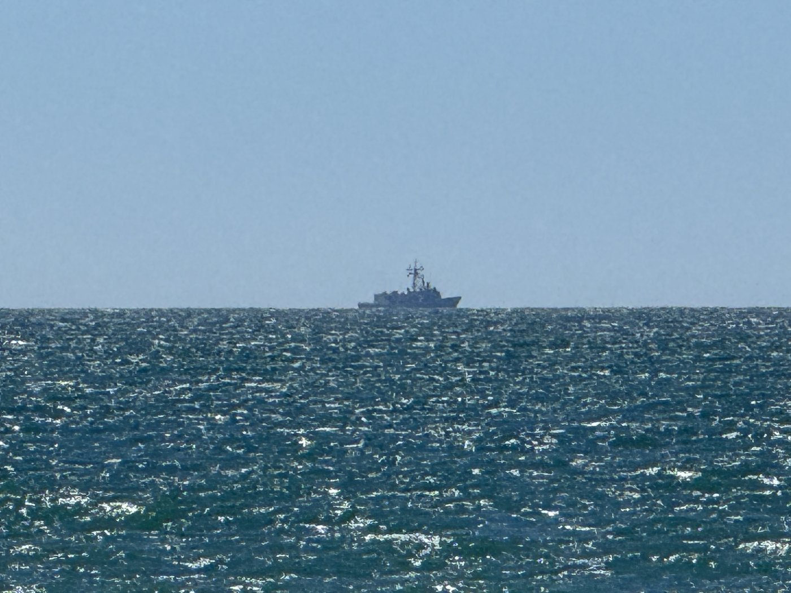
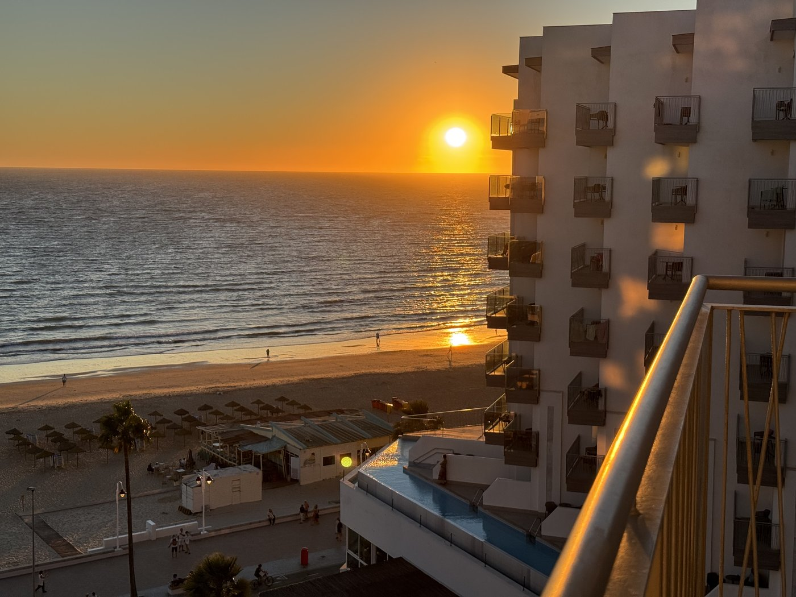

Das ist, was der Friese Rüm hart, klaar kiming nennt — weites Herz, klarer Horizont. Vor allem der zweite Teil: An diesem Morgen hatten wir phantastische Fernsicht, klar bis zur Kimm.
Unser Zimmer liegt im achten Stock, geschätzte 30 bis 33 Meter über Seelevel. Das ergibt eine Horizontentfernung von rund 11,4 bis 12 Seemeilen. In größerer Höhe ginge sicherlich noch mehr.
Wie weit man sieht, hängt allein an der Augeshöhe: die Kimm liegt bei ungefähr 2,08 mal der Wurzel aus der Höhe in Metern, das Ergebnis in Seemeilen. Deshalb der Ausguck im Mast — jeder Meter höher schiebt den Horizont ein Stück hinaus, anfangs viel, später immer weniger.
Sonst haben wir an diesem Tag wenig vorgehabt. Auspennen, ausgiebig duschen, ein kleiner Strandbummel. Aber selbst dabei gibt es was zu sehen.
Das erste Detail hätte ich fast übersehen: Mitten im Gehweg des Paseo Marítimo, der Strandpromenade entlang der Playa Victoria, steckt eine stilisierte Jakobsmuschel. Das hier ist tatsächlich ein Jakobsweg.

Genauer gesagt gehört er zum Camino del Estrecho, der von Algeciras nach Santiago de Compostela führt. Der Zweig von Cádiz beginnt in der Altstadt an der Kathedrale — wo auch sonst — und läuft dann direkt an unserem Hotel vorbei, entlang der uralten Via Augusta erst nach San Fernando, dann weiter nach Puerto Real und nach Jerez.
Wir sind in der letzten Woche also die ersten vier Kilometer davon gewandert, ohne es zu wissen. Und die gesamte erste Etappe mit der Bahn gefahren. Pfui, geschummelt.
Der Paseo endet an einer alten Festung, die bis heute militärisch genutzt zu sein scheint. Oben steht ein Artilleriegeschütz.

Und das erinnerte mich an etwas. Am Tag zuvor hatte es mir einige Male so geschienen, als hörte ich Artilleriefeuer — bei der Marine oft genug gehört, vom eigenen Schiff und von weiter entfernten Einheiten. Ich hatte es fast wieder vergessen, aber als ich das Geschütz da oben sah, fiel es mir wieder ein.
Also ein wenig die Internet-Suche bemüht. Nein, das Geschütz da oben war es sicher nicht — das ist nur noch Dekoration. Es gehört zur RMASD La Cortadura, ausgeschrieben Residencia Militar de Acción Social de Descanso: ein Erholungs- und Ferienheim des spanischen Heeres, keine aktive Artillerieeinheit.
Aber nur wenige Kilometer weiter südlich, direkt am Ende der Nehrung, wo Straße und Bahn Richtung San Fernando abbiegen, liegt eine weitere alte Küstenbatterie: die Torregorda, der dicke Turm. Dort befindet sich heute ein Testzentrum für Artillerie, komplett mit Schießgebiet draußen vor der Küste. Und für dieses gab es am Vortag eine Sperrzeit für die Schiffahrt — was auf aktiven Schießbetrieb deutet.
Kein Beweis. Aber immerhin recht wahrscheinlich, daß mein Ohr mich diesmal nicht getäuscht hat.
Ansonsten haben wir eigentlich nur kurz das kühle Atlantikwasser genossen — nur die Füße, denn Badezeug hatten wir nicht mitgenommen.

Bei einer weiteren Mira-Filiale gab es einen weiteren Erdbeermilchshake — diesmal sogar im Glas, denn bei dieser Filiale kann man sich setzen.

Auf dem Rückweg haben wir dann ein Steakhaus ausprobiert, das wir ein paar Tage zuvor schon entdeckt hatten. Der Chef wirkte ein wenig grumpig — das Essen war ohne jeden Zweifel hervorragend. Das müssen wir unbedingt noch einmal wiederholen.

Danach ins Hotel — und dank der ausgezeichneten Fernsicht habe ich vom Balkon aus sogar noch ein graues Schiff am Horizont entdeckt. Leider offenbar ohne AIS: Marinetraffic wollte mir nicht verraten, wer das ist. Anders als beim Frachter, den wir kurz zuvor gesehen hatten.

Im Hotel haben wir dann versucht, aus uns alten Käsmicheln ein paar waschechte Südländer zu brutzeln. Den Rest des Tages haben wir gemütlich in der Sonne gebraten — in kleinen Portionen, man darf's ja nicht übertreiben. Mit dem frischen Westwind, der den ganzen Tag wehte, war das sehr angenehm.
Von den Sonnenuntergängen hier kann ich auch nicht genug bekommen.
